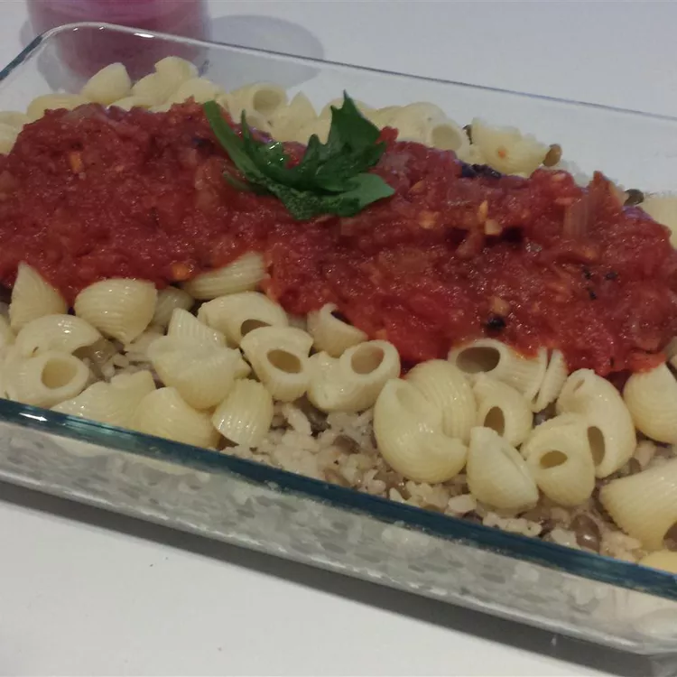

Home
Koshary Recipe

Koshary is pretty much Egypt's staple street food.
You can find anything from a 2-story koshary restaurant to a man with a cart on the side of the street.
Filling and healthy, come see Egypt's most famous dish! Instead of French-fried onions, I use my black pepper onion rings on here.
Ingredients
- 1 (14.5 ounce) can chickpeas (garbanzo beans)
- ¼ cup vinegar
- 1 teaspoon ground coriander
- 1 teaspoon ground cayenne pepper
- ½ teaspoon ground cumin
- ½ (16 ounce) package ditalini pasta
- 1 ½ cups short-grain rice, rinsed
- cold water, to cover
- water to cover
- 1 pinch salt and ground black pepper to taste
- 1 tablespoon olive oil
- 1 yellow onion, minced
- 3 cloves garlic, minced
- 1 (14 ounce) can crushed tomatoes
- 1 tablespoon butter
- 3 cups chicken stock
- 1 (3 ounce) can French-fried onions
Steps
- Combine the chickpeas, vinegar, coriander, cayenne pepper, and cumin in a resealable bag or container with a tight-fitting lid. Store in refrigerator while prepping remainder of dish, shaking occasionally.
- Bring a pot of lightly salted water to a rolling boil. Cook the ditalani pasta in the boiling water until cooked through yet firm to the bite, about 8 minutes; drain and set aside.
- Combine the rice with enough cold water to cover; allow to soak for 20 minutes. Drain.
- Meanwhile, combine the lentils with enough water to cover in a pot; season with salt and pepper. Bring the lentils to a boil and cook at a boil until tender, about 30 minutes. Drain.
- Heat the olive oil in a saucepan over medium-high heat; cook and stir the onion and garlic in the hot oil until translucent, 5 to 7 minutes. Add the crushed tomatoes, season with salt and pepper, reduce heat to medium-low, and maintain at a simmer while preparing remainder of dish.
- Melt the butter in a pot over medium-high heat. Add the rice to the butter, increase heat to high, and fry for 4 to 5 minutes, stirring constantly. Pour the chicken stock over the rice; bring to a boil. Season the rice mixture with salt and pepper, reduce heat to low, cover the pot, and cook until rice is tender, and the liquid has been absorbed, about 20 minutes.
- Mix the rice and lentils together on a large serving platter. Spread the cooked ditalani over the rice and lentil mixture. Serve with the marinated chickpeas, the tomato sauce, and the French-fried onions as condiments.